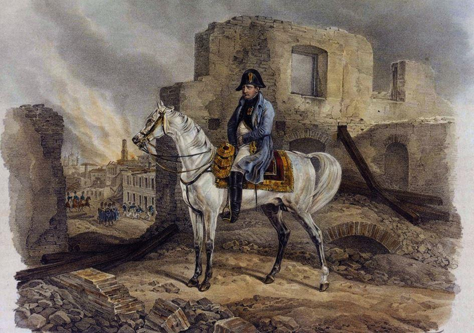

Le 22 juin 1812, la Grande Armée de Napoléon traverse le Niémen, fleuve frontalier de l’Empire russe. La progression sur un vaste territoire s’avère laborieuse, les armées russes se dérobant et refusant de livrer la bataille que l’Empereur souhaite ardemment. La tactique de la « terre brûlée » prive les soldats de l’armée napoléonienne des ressources nécessaires, tandis que l’empereur Alexandre Ier ne semble pas pressé de conclure la paix. Mi-août, les Français et leurs alliés occupent la ville de Smolensk réduite en cendres. Les Russes s’arrêtent enfin début septembre sur la position de Borodino. Le 7 septembre, dans une grande bataille à laquelle les Français donnent le nom de la Moskova, la Grande Armée s’épuise en fournissant des efforts quasi surhumains contre les masses ennemies qui tiennent ferme. Si la victoire tactique appartient à Napoléon, les Russes ayant battu en retraite durant la nuit, ses adversaires ne se considèrent pas comme vaincus et préparent leur revanche.
L’allégresse de la Grande Armée
à la vue de Moscou. Illustration par JOB. Collection privée.Le 14 septembre, la Grande Armée arrive à Moscou. C’est la seconde capitale de l’Empire russe après Saint-Pétersbourg, une ville sainte qui contient une énorme quantité d’églises et de monastères. Une vision féérique s’ouvre devant les officiers et soldats émerveillés, tel Eugène Labaume, officier d’ordonnance d’Eugène de Beauharnais, vice-roi d’Italie : « L’état-major, vers les onze heures, s’établit sur une haute colline, d’où nous aperçûmes, par un temps superbe, un millier de clochers dorés et arrondis, qui, brillant des rayons du soleil, ressemblaient de loin à autant de globes lumineux. Il était de ces globes, qui, posés sur le sommet d’une colonne ou d’un obélisque, avaient la forme d’un aérostat suspendu dans les airs. Nous fûmes transportés d’étonnement à la vue d’un si beau coup d’œil, devenu plus séduisant encore par le souvenir des tristes objets dont nous avions été témoins : aussi personne ne put concentrer sa joie, et par un mouvement spontané, nous criâmes tous Moscou ! Moscou !
À ce nom tant désiré, on courut en foule sur la colline, et chacun, en faisant des remarques de son côté, découvrit à tout moment des merveilles nouvelles. L’un admirait un magnifique château placé sur notre gauche, et dont l’architecture élégante nous rappelait celle des Orientaux ; un autre portait son attention sur un palais, sur un temple ; mais tous étaient frappés du superbe tableau que présentait cette grande ville. »
Contrairement aux autres capitales prises par les troupes napoléoniennes, Moscou ne se soumet pas au vainqueur : pas de députation avec les clés de la ville, pas d’habitants agitant les mouchoirs à leurs fenêtres en voyant passer les régiments chamarrés... La ville est déserte, tout au plus quelques milliers d’habitants se cachent-ils dans les maisons fermées. La plupart des Moscovites sont partis, incités par le gouverneur, Fedor Vassiliévitch Rostoptchine, qui médite un geste patriotique sans précédent : détruire la ville par le feu. Les pompes à incendie ont été évacuées ; des criminels sortis des prisons parcourent les rues... Un groupe d’hommes du peuple essaie de résister à l’intérieur du Kremlin ; il est rapidement balayé. Napoléon fait occuper l’ancienne forteresse des tsars par la Garde impériale pour y maintenir l’ordre.
Peu à peu, les unités de la Grande Armée s’installent dans les quartiers de Moscou et pensent pouvoir jouir d’un peu de repos. Cependant, dès le soir du 14 septembre, les premiers départs de feu et une forte explosion perturbent leur sommeil. Le général hollandais Dedem de Gelder raconte : « Il était entre six et sept heures du soir lorsqu’une violente détonation se fit entendre du côté de la porte de Kalouga. C’était un magasin à poudre que l’ennemi faisait sauter, et c’était, paraît-il, le signal convenu ; car, un instant après, je vis partir plusieurs fusées, et, une demi-heure plus tard, le feu se manifesta dans différents quartiers de la ville. » Le capitaine Boniface de Castellane note dans son journal : « J’ai été réveillé par l’incendie qui a éclaté le même soir dans le quartier des boutiques. Le gouvernement russe avait laissé des soldats de police chargés de cette opération. »
L’absence de pompes empêche les Français de lutter contre les incendies qui éclatent dans différents endroits. Le pillage des boutiques et des maisons abandonnées commence. On arrête plusieurs hommes avec de longues barbes et des figures sinistres qui sont en train de mettre le feu aux bâtiments. Le chef de bataillon Louis-Joseph Vionnet de Maringoné passe une nuit agitée : « Vers minuit je visitais les postes que j’avais placés dans la ville. En arrivant à celui qui était placé près de la Bourse, j’aperçus une fumée épaisse, mais point de feu ; le chef du poste me dit qu’il avait déjà vu la même chose une autre fois, mais que toutes les portes étant fermées, il avait cru que ce ne pouvait être qu’une chose naturelle à laquelle l’armée n’avait aucune part ; tout en causant ainsi et en examinant d’où cette fumée pouvait provenir, j’aperçus une lueur de feu, je courus vite à la place et je revins conduisant cent hommes avec moi, je fis mettre le reste du bataillon sous les armes. Quoique j’eusse été fort peu de temps, à mon retour je trouvai une maison tout en feu et le commencement d’un incendie. J’en fis prévenir le maréchal [Mortier] qui dit de faire chercher des pompes et de prendre les précautions nécessaires pour empêcher la communication. Il n’y avait point de vent et le feu ne paraissait pas faire de progrès bien rapides, mais on ne pouvait y porter du secours parce que toutes les portes étaient fermées et que nous n’avions aucun instrument pour les briser. »
Napoléon refuse de croire d’abord à l’implication des Russes dans une destruction systématique de leur ancienne capitale. Venu s’installer au Kremlin le 15 septembre, l’Empereur n’y reste pas longtemps : toute la ville est en feu. Le vent propage les flammes qui envahissent progressivement des quartiers entiers où les maisons sont bâties principalement en bois. Dépité, Napoléon se voit obligé de quitter le Kremlin à la hâte, sortant par une poterne qui donne directement sur la rivière Moskova, et se réfugie au palais Pétrovski, à l’extérieur de la ville.
Napoléon quittant le Kremlin avec son escorte.
Carte postale d’après le tableau de Mazourovski.
Paul de Bourgoing, officier d’état-major, dresse un tableau impressionnant : « À peine la nuit commença-t-elle à assombrir cet horizon couvert de palais, que nous vîmes briller la lueur sinistre de deux incendies, puis de cinq, puis de vingt, puis de mille gerbes de flammes s’élevant à la fois sur les points les plus éloignés les uns des autres. Au bout de deux heures, tout l’horizon n’était qu’un cercle embrasé. Nous comprîmes bientôt la signification de ce langage de feu, qui nous était adressé par le peuple russe à l’instant de notre arrivée devant sa capitale. »
Le lendemain, la violence du vent fait transformer les brasiers isolés en une mer de feu, au milieu de laquelle le Kremlin s’élève comme une île. Des tourbillons de fumée montent vers le ciel et l’obscurcissent ; le soleil ne se présente plus que comme « un disque obscur et sanglant ». La terre est chaude, au point que les hommes ressentent des brûlures aux pieds à travers la semelle de leurs chaussures. Chassés de leurs logements par le feu, les officiers parcourent la ville à la recherche d’un nouveau toit, mais à peine installés, ils se voient forcés de quitter les lieux pour la même raison. Au palais Pétrovski, l’Empereur voit arriver quelques Français établis à Moscou depuis de longues années et qui ont tout perdu en un instant. De loin, il entend le mugissement de l’incendie qui fait partir en fumée tous ses espoirs de faire la paix avec le tsar...
Dans la ville, c’est une véritable bacchanale ; tout ordre disparaît, chacun agit pour son propre compte. Les occasions de s’enrichir ne manquent pas. Selon le sous-lieutenant Pierre Besnard du 12e de ligne, qui écrit à sa femme le 23 septembre, « la moitié des soldats ne savent où mettre l’argent, effets ou argenterie ». Les unités qui campent en dehors de la ville participent également au pillage, les soldats venant à Moscou à tour de rôle avec l’accord tacite de leurs chefs. Le général Jean-François Boulart justifie la passivité des officiers : « Ne valait-il pas mieux en effet laisser faire que de laisser tout dévorer par les flammes ? Au moins, au milieu de tous les excès et de tout le gaspillage inséparables de ce désordre, tout n’était pas perdu ; la plus grande partie de ce qu’on enlevait aux flammes était profitable. D’ailleurs, après tant de fatigues, de privations et de dangers, le soldat était-il coupable de pourvoir à ses besoins, quand l’administration, depuis si longtemps, n’y pourvoyait pas ? »
Les maraudeurs français à Moscou.
Illustration par B. Zvorykine.Labaume écrit : « Alors la licence devint effrénée, et les soldats n’étant plus retenus par la crainte qu’inspire toujours la présence des chefs, se livrèrent à tous les excès imaginables : aucune retraite ne fut assez sûre, aucun lieu assez saint, pour se préserver de leurs recherches avides. » Le 18 septembre, le maréchal Mortier constate dans une lettre au major général Berthier : « Le pillage est à son comble dans tous les quartiers. Les corps de l’armée qui avoisinent la ville viennent indistinctement à force armée prendre tout ce qu’ils trouvent. Les postes qui veulent maintenir le bon ordre sont souvent compromis. On dit que ces détachements sont autorisés à venir en ville pour y prendre des objets dont ils ont besoin ; mais, si le désordre continue, bientôt les différents magasins que j’ai conservés avec tant de peine, deviendront la proie des pillards. »
Philippe de Ségur, témoin oculaire et auteur d’un ouvrage populaire sur l’expédition de Russie, décrit le camp du 4e corps d’armée : « C’étaient au milieu des champs, dans une fange épaisse et froide, de vastes feux entretenus par des meubles d’acajou, par des fenêtres et des portes dorées. Autour de ces feux, sur une litière de paille humide, qu’abritaient mal quelques planches, on voyait les soldats et leurs officiers, tout tachés de boue et noircis de fumée, assis dans des fauteuils, ou couchés sur des canapés de soie. À leurs pieds étaient étendus ou amoncelés les schalls de cachemire, les plus rares fourrures de la Sibérie, des étoffes d’or de la Perse, et des plats d’argent dans lesquels ils n’avaient à manger qu’une pâte noire, cuite sous la cendre, et des chairs de cheval à demi grillées et sanglantes : singulier assemblage d’abondance et de disette, de richesse et de saleté, de luxe et de misère ! Entre les camps et la ville, on rencontrait des nuées de soldats traînant leur butin, ou chassant devant eux comme des bêtes de somme, des moujiks courbés sous le poids du pillage de leur capitale. »
Le 17 septembre, le général Henri-François Delaborde de la Jeune Garde s’installe au palais du gouverneur. Les Français y trouvent tout un assortiment d’espèces de petits barils de bois remplis de matières incendiaires. Beaucoup d’officiers sont témoins de ces découvertes, tel le général Pierre Berthezène : « J’ai vu plusieurs de ces torches incendiaires dans l’hôtel de Rostoptchine ; elles ressemblaient assez, par leur forme et leurs dimensions, à une carotte de tabac, de neuf à dix pouces de long sur deux pouces environ de diamètre ; une fois allumées, elles brûlaient même dans l’eau. » Des matières inflammables sont découvertes dans beaucoup de bâtiments. Le général Louis-François Lejeune apprend par quelques maraudeurs, qui sont allés chercher des vivres dans les demeures abandonnées, que « le bris d’une serrure ou d’une porte entraînait la détonation d’un artifice, qui mettait le feu à des amas d’étoupes, de copeaux ou de fagots, qui s’embrasaient et incendiaient la maison. Beaucoup de portes furent trouvées ainsi armées de batteries de fusil, dont la détente fléchissait au premier choc, embrasait l’intérieur et forçait nos maraudeurs à combattre l’incendie, pour arracher aux flammes quelques sacs de farine, quelques pains de sucre et autres aliments que la population avait rassemblés aux approches de l’hiver. »

Napoléon sur les ruines de Moscou.
Composition par A. Adam. Collection privée
Dans l’après-midi du 17 septembre, la pluie fait ralentir les progrès du feu. Les Français arrêtent toujours des incendiaires, qui sont fusillés ou pendus aussitôt. Toutefois, dès son retour au Kremlin le 18, Napoléon ordonne de faire un vrai procès à une poignée d’hommes accusés d’avoir mis le feu. Mais auparavant, il donne des ordres stricts pour arrêter le pillage et les désordres. Dans une lettre à l’impératrice Marie-Louise, l’Empereur donne sa version des événements, destinée à être lue dans les salons à travers l’Europe : « Mon amie, je t’ai déjà écrit de Moscou. Je n’avais pas d’idée de cette ville. Elle avait 500 palais aussi beaux que l’Élysée-Napoléon, meublés à la française avec un luxe incroyable, plusieurs palais impériaux, des casernes, des hôpitaux magnifiques. Tout a disparu, le feu depuis 4 jours la consume. Comme toutes les petites maisons des bourgeois sont en bois, cela prend comme des allumettes. C’est le gouverneur et les Russes qui, de rage d’être vaincus, ont mis le feu à cette belle ville. 200 000 bons habitants sont au désespoir et dans la rue en misère. Il reste cependant assez pour l’armée, et l’armée a trouvé bien des richesses de toute espèce, car dans ce désordre tout est au pillage. Cette perte est immense pour la Russie ; son commerce en sentira une grande secousse. Ces misérables avaient poussé la précaution jusqu’à enlever ou détruire les pompes. Mon rhume est fini, ma santé bonne. Adieu, mon amie. Tout à toi. »
Le procès des incendiaires est nécessaire pour prouver à l’Europe que les Russes ont eux-mêmes brûlé leur ville. Le 24 septembre, une commission militaire composée de généraux et d’officiers supérieurs se réunit dans un palais. Vingt-six individus comparaissent devant ce tribunal, les uns pris en flagrant délit, les autres seulement soupçonnés d’avoir participé aux incendies au moyen de « mèches, fusées, cadenats phosphoriques, soufre, et autres matières combustibles trouvées sur les accusés, ou placées à dessein dans plusieurs habitations ». La commission accuse le gouverneur Rostoptchine d’avoir fait ouvrir les portes des prisons ; « il en sortit environ huit cents criminels [...] pour prix de leur liberté, on exigea qu’ils missent le feu à la ville vingt-quatre heures après l’arrivée des troupes françaises ». En outre, « plusieurs officiers et militaires de l’armée russe et des agents de police reçurent secrètement l’ordre de rester travestis à Moscou, pour diriger les incendiaires et donner le signal de l’embrasement ». Dix accusés sont condamnés à la peine de mort ; les seize restants, pour lesquels les preuves ne sont pas suffisantes, sont écroués « pour prévenir le mal qu’ils pourraient faire ». L’exécution se déroule le 25 septembre. Les cadavres des hommes fusillés sont attachés à des poteaux munis d’un écriteau avec cette inscription en français et en russe : « Incendiaire de Moscou ».
Le trésorier Guillaume Peyrusse note dans son journal aussitôt après le procès : « Dix incendiaires trouvés nantis de lances goudronnées ont été condamnés à mort ; ils ont avoué leur scélératesse et la mission qu’ils avaient reçue. Les seize restants ont été détenus comme n’étant pas suffisamment convaincus. Parmi les détenus, deux appartenaient à la bourgeoisie ; ils déclarèrent que le gouvernement russe, en ordonnant ce grand acte de barbarie, avait eu le double motif de ranimer l’énergie des habitants en entretenant dans le pays une haine violente contre nous et en nous rendant un objet d’exécration ; en outre, d’anéantir toutes les ressources qui auraient pu prolonger notre séjour, et nous contraindre à une retraite plus prompte. »
Les dégâts matériels ont été immenses : des trésors culturels inestimables, des étoffes précieuses, toutes sortes d’objets ont disparu. En revanche, les caves n’ont guère été touchées et renferment toujours des vêtements et des provisions. Le maréchal Louis-Nicolas Davout écrit à sa femme : « Malgré l’incendie de Moscou, on y trouve pour la subsistance des troupes de grandes ressources ; ainsi, sous ce point de vue, les monstres qui ont détruit cette ville ont manqué leur but ; mais ils auront fait à leur propre pays plus de mal que n’auraient pu lui en faire dix batailles perdues : des siècles ne répareront pas le mal. » Le lieutenant Pierre-Laurent Paradis du 25e de ligne déclare dans une lettre à sa « tendre amie » le 20 septembre : « Tous les jours nous trouvons dans les caves qui n’ont pas été brûlées beaucoup de fourrures en poils superbes. J’ai fait l’acquisition d’une fort belle pelisse en poil de renard couverte d’un très beau satin violet. Je désirerais bien pouvoir te l’envoyer, mais je ne sais comment faire. L’objet est trop volumineux. »
Ces ressources font croire à la possibilité de passer l’hiver dans la ville dévastée. Napoléon persiste à y demeurer jusqu’à la mi-octobre, attendant encore la réponse d’Alexandre Ier à ses propositions. Mais le monarque demeure muet, tandis que l’armée russe se refait dans le camp de Taroutino. Elle ne tarde pas à recommencer les hostilités en attaquant les troupes du maréchal Murat le 18 octobre. Les partisans mènent la « petite guerre » qui devient de plus en plus active. Napoléon comprend enfin qu’il est temps de partir... Le départ de la Grande Armée commence le 19 octobre. Incapable de s’ouvrir le chemin vers les provinces intactes en passant sur le ventre de l’armée russe qui lui barre la route à Maloïaroslavets, Napoléon emprunte la même route qu’à l’aller, complètement ravagée. C’est le début de la terrible retraite de Russie, ponctuée par des combats acharnés où il ne s’agit plus de conquérir mais de survivre dans un climat épouvantable et au milieu d’une population acharnée contre l’envahisseur.
L’incendie de Moscou a été un événement crucial de la campagne de Russie. Claude-François de Méneval, secrétaire de l’Empereur en 1812, déclare : « L’incendie complet de la vieille capitale de la Russie était un fait hors de toute prévision et qui, en déconcertant tous les plans de Napoléon, a été la principale cause de tous les malheurs dont notre vaillante armée a si cruellement souffert par la suite. » Avec le recul, Napoléon lui-même le reconnaît lors de son exil à Sainte-Hélène : « Si Moscou n’eût pas été livré aux flammes, j’aurais donné le spectacle singulier d’une armée hivernant paisiblement au milieu d’une nation ennemie qui la presse de toutes parts. » La destruction de Moscou a marqué un tournant de la guerre et a entraîné un long calvaire et un anéantissement de l’armée napoléonienne.
Partager cette page